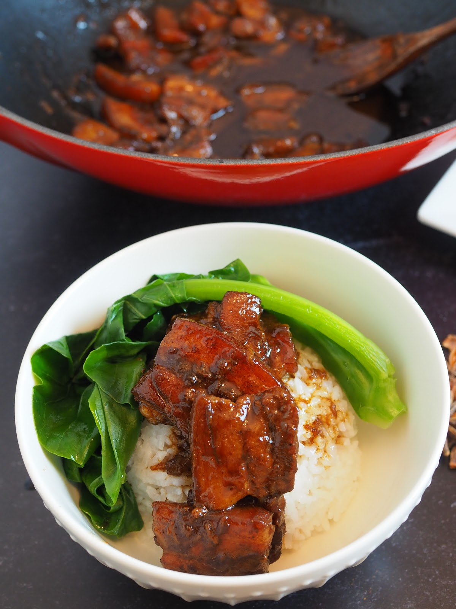

Braised Pork Belly (Taiwanese Style)
February 1, 2021 by Mandy

Ingredients
- 1 1/2 lb Skin on pork belly
- 2 tbsp of shallot oil
- 10 cloves of garlic
- 1 tbsp soy sauce
- 1 tbsp dark soy sauce
- 1 tbsp thick soy sauce (can be substituted with dark soy sauce)
- 1 tsp five spice powder
- 2 tbsp cooking wine
- 2 pieces of rock sugar
- 1 1/2 cups of chicken broth or water
Directions
- Cut pork belly into one inch pieces.
- Add 2 tbsp shallot oil and 10 garlic cloves to wok on medium heat. Stir fry for a couple of minutes until fragrant.
- Scoot the aromatics to one side and add pork belly to brown. Once browned, add 2 tbsp cooking wine around the sides.
- Then, add 1 tbsp each of soy sauce, dark soy sauce, and thick soy sauce followed by 1 tsp of five spice powder and rock sugar.
- Continue to stir fry until the sauces mostly evaporate. (This step is very important). Once it's mostly cooked down, the sauce should be glistening like a glaze around the pork belly. Add chicken stock or water until it covers the meat and continue cooking.
- Cover pot with a lid and cook for another 30 minutes/until tender.